Full setup guide: build your own copy from scratch, put it online, install it on a phone, and sync laptop and phone.
Who this is forAnyone setting up the journal for themselves or for a friend, starting with nothing. Every click is written out. Every problem we hit the first time is marked ⚠ Watch out, with the fix.
What you need
A laptop or desktop with a web browser (Chrome, Edge or Brave).
A phone, if you want the journal on the phone too.
An email address for a free GitHub account.
The file trade-journal-app-files.zip that came with this guide (only needed for Route B, part 3).
About 45 minutes the first time.
Contents
How it all fits together
Two ways to give your friend the journal (pick one)
Make your own copy: GitHub account, files, putting it online
Open it and install it on the phone
First settings: instrument, checklist, limits
Turn on sync between laptop and phone
Problems and fixes (everything we ran into)
Changing or updating the app later
The files: what each one does
Final checklist
Version of the app described here: v1.4. You can always see the version at the bottom of the app's Settings tab (picture in part 4).
1. How it all fits together
Read this once. Most of the confusion the first time came from not having this picture.
Three separate things
Thing
What it is
Where it lives
1. The app
The program: the screens, buttons and calculations. Just files. It holds no trades.
A public GitHub repository, published as a website by GitHub Pages.
2. Your trades on each device
Each browser keeps its own copy of the trades, like a notebook. The laptop's notebook and the phone's notebook are separate.
Inside the browser on that device.
3. The sync cabinet
A shared place both notebooks copy to and from, so they stay the same.
A second, private GitHub repository.
Laptop app + its own notebook
⇄
Private repo trade-journal-data the sync cabinet
⇄
Phone app + its own notebook
Why it is built this way
No server to pay for or look after. The app is plain files that GitHub hosts for free. Trades stay on your devices. They only leave a device to go into your own private repository, which nobody else can open. A database service would need a monthly fee or a company holding your data.
⚠ Watch out: what confused us
We logged a trade on the laptop, opened the phone, and it was empty. Nothing was broken: sync was not turned on yet, so each notebook only had its own trades. Until sync is connected on each device, the top-right of the app shows Sync off.
Two keys you will make
The repository name tells the app which cabinet to use: trade-journal-data.
An access token is a long password that opens only that one cabinet. You make one per device: one for the laptop, one for the phone.
2. Two ways to give your friend the journal
You do not have to rebuild the app to give it to someone. Pick a route:
Route A: share your link
Route B: their own copy
What
Your friend opens your app link, e.g. billlygene.github.io/trade-journal.
Your friend gets their own GitHub account and their own copy of the app at theirname.github.io/trade-journal.
Their data
Fully separate from yours. Each browser has its own notebook, and they make their own private sync cabinet. You never see their trades and they never see yours.
Fully separate.
Time
About 20 minutes (parts 4 to 6 only).
About 45 minutes (parts 3 to 6).
Downside
If you change or delete your app, it changes for them too.
More steps. Updates you make don't reach them unless they copy them (part 8).
Which to pick
The app is only the program, not the data. Sharing it is like two people using the same calculator website: the numbers they type stay on their own devices. Pick Route A if your friend just wants a working journal. Pick Route B if they want to own it, change it, or not depend on you.
Route A: skip part 3. Your friend still needs a free GitHub account for sync (part 3, step 3.1), then does parts 4, 5 and 6.
Route B: follow every part in order.
How we put the original online
Claude wrote the files and saved them to the repository BilllyGene/trade-journal on its main branch. GitHub Pages then published them automatically, as it does after every change (it takes 1 to 2 minutes). Uploading the files through the GitHub website (part 3, option 2) does exactly the same job. You don't need any programming tools.
3. Make your own copy (Route B)
3.1 Create a GitHub account (skip if you have one)
Go to github.com → Sign up.
Enter email, password and a username. Write the username down exactly: it becomes part of the app's web address and is typed into the app later. Example: KwameFX.
Confirm the email code GitHub sends. Choose the Free plan.
3.2 Get the app files into a repository: two options
Option 1, easiest: Fork (copy) the original. A fork is GitHub's one-click "make me a copy".
Signed in as the friend, open github.com/BilllyGene/trade-journal.
Click Fork (top right) → keep the name trade-journal → Create fork.
Done. Go to 3.3.
Why fork is the easiestEvery file lands in the right place automatically. Later, one button (Sync fork) copies your improvements into theirs (part 8).
Option 2: upload the files yourself (if you'd rather not depend on the original repository).
On the computer, find trade-journal-app-files.zip. Right-click → Extract All → Extract. You get a folder with 7 files: index.html, sw.js, manifest.json, icon.svg, icon-192.png, icon-512.png, README.md.
On the next page, click the link uploading an existing file.
Open the extracted folder, select all 7 files (Ctrl+A) and drag them onto the GitHub page.
Wait until all 7 show in the list, then click the green Commit changes at the bottom.
⚠ Watch out: files must sit at the top level
Drag the files, not the folder and not the zip. If you drag the folder, GitHub puts everything inside a sub-folder, and the website shows a 404 "page not found". The repository's main page must list index.html directly. If it shows a folder name instead, delete the repository (Settings → bottom → Delete this repository) and upload again.
Why the app repository must be PublicOn a free GitHub account, Pages only publishes public repositories. That only makes the program public: anyone could see how the app is built. Trades and screenshots are never stored here.
3.3 Put it online with GitHub Pages
In the trade-journal repository, click Settings (the tab with a gear, top of the repository).
Left menu: Pages.
Under Build and deployment → Source, choose Deploy from a branch.
Under Branch, choose main and the folder / (root). Click Save.
Wait 1 to 2 minutes, then refresh the Pages settings page. A box appears: "Your site is live at https://USERNAME.github.io/trade-journal/". Click Visit site.
How to tell it workedThe site opens with the title Trade Journal and four tabs. If you see a 404, wait two more minutes and refresh. If it's still 404, check the "files at the top level" warning above.
4. Open it and install it on the phone
4.1 Open on the laptop
Go to https://USERNAME.github.io/trade-journal/ (Route A: your own link). Bookmark it.
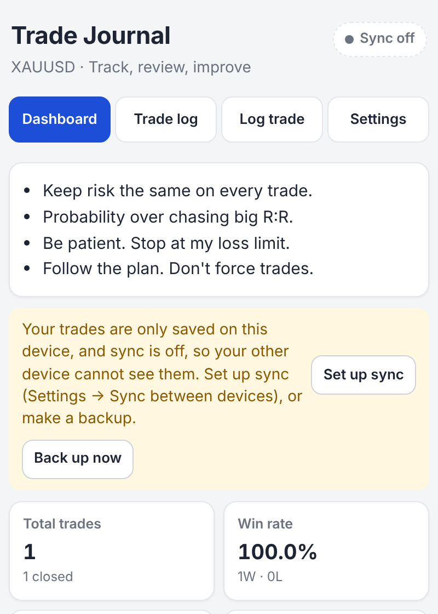
First visit. Sync off at the top right is normal until part 6 is done.
4.2 Install on the phone
Android (Chrome): open the link → tap ⋮ (top right) → Add to Home screen or Install app.
iPhone (Safari): open the link → tap the Share button (square with an up-arrow) → Add to Home Screen → Add.
Why install instead of just using the browserIt opens like an app and works with no internet. On iPhone it also matters for safety: Safari can delete a website's saved data if it isn't opened for a few weeks, and installed apps are protected from this.
4.3 How to "refresh" and how to check the version
You'll be asked to check the version whenever the app has been changed. Two things to know:
Refresh means reload the page. On a laptop, click the circular arrow left of the web address, or press F5. On a phone app, close it fully (swipe it away) and open it again.
The version is at the very bottom of the Settings tab, in the last box called About:
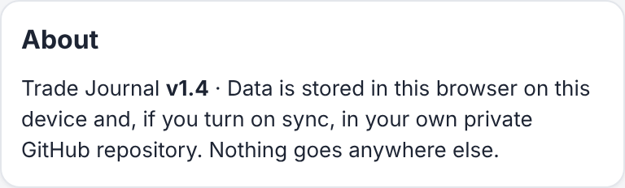
Settings tab → scroll to the bottom → About.
⚠ Watch out: the old version can stick for one refreshThe app keeps a copy of itself so it works offline. After a change it fetches the new version on the next open, but sometimes needs two refreshes. If the version number is old, refresh again.
5. First settings: instrument, checklist, limits
Open the Settings tab. Settings sync to the other device too, once part 6 is done. Light/Dark mode is the exception and stays per device.
5.1 What you trade
In Rules and limits, set Main instrument (e.g. XAUUSD, EURUSD, US30) and click Save. It's filled in on every new trade and shown under the title. You can still type a different instrument on any single trade.
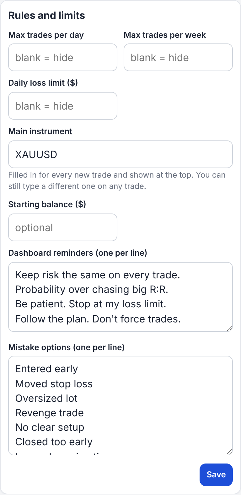
Rules and limits: main instrument, trade limits, loss limit, starting balance, reminders and mistake list.
Good to know when trading something other than gold
Prices show the decimals you type (gold 2385.40, EURUSD 1.08523).
Money is in US dollars, and P&L is typed in yourself from MT5. The app never calculates money from prices, because pip values differ by broker and instrument.
Sessions are fixed in GMT: London 07:00 to 11:00, New York 13:00 to 17:00, Asia 00:00 to 04:00. The app guesses the session from the time you type, using the device clock as GMT. If your friend is not on GMT (Ghana is), they should pick the session by hand.
5.2 Checklist (strategy steps)
Checklist steps card: load preset A: ICC or preset B, or edit names and descriptions, reorder with ↑ ↓, remove with ✕, add with + Add step (1 to 8 steps). Click Save checklist.
Why old trades don't changeEach trade stores a copy of the steps it was logged with. Changing strategy later never relabels old trades, so your history stays honest.
5.3 Logging a trade (quick tour)
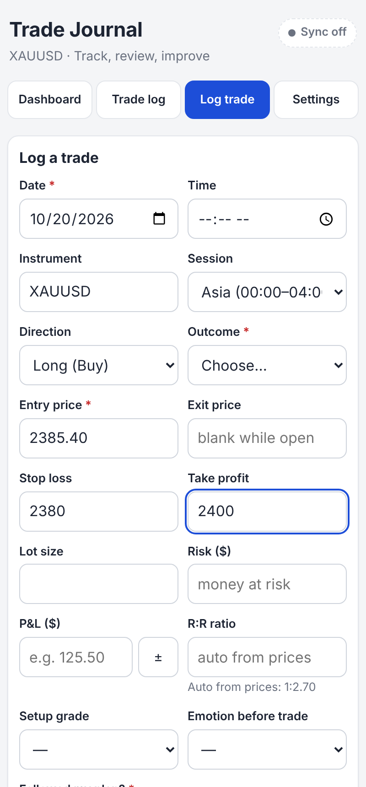
Log trade tab: fields marked * are required.
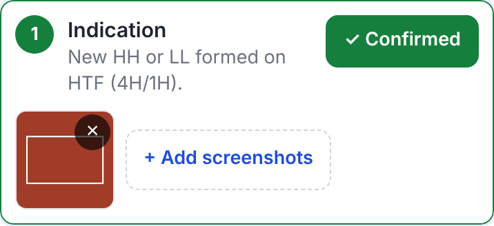
Each step: tap Confirm, add screenshots. On a laptop you can paste with Ctrl+V.
P&L: use the ± button for a loss, because the iPhone number keypad has no minus key. R:R fills itself from entry, SL and TP if you leave it blank.
6. Turn on sync between laptop and phone
Do 6.1 once. Then do 6.2 and 6.3 on the laptop, and 6.2 and 6.3 again on the phone.
6.1 Create the private cabinet (once)
On GitHub click + (top right) → New repository.
Repository name: type exactly trade-journal-data, with no space at the end.
Choose Private. Click Create repository. Leave it empty: the app fills it.
⚠ Watch out: this is what happened to us
A space typed after the name made GitHub create trade-journal-data-, with a dash at the end. The app then said "Repository … not found". Check: the name at the top of the new repository page must end in data, not data-. Fix: open the repository → Settings → General → Repository name → remove the dash → Rename. Tokens keep working after a rename.
Why it must be PrivateTrades and screenshots are stored here. The app refuses to sync to a public repository and says so.
6.2 Make an access token for this device
Open this link (sign in if asked): https://github.com/settings/personal-access-tokens/new
The long way there: profile picture (top right) → Settings → bottom of the left menu Developer settings → Personal access tokens → Fine-grained tokens → Generate new token.
Field on the page
What to choose
Token name
journal laptop (on the phone: journal phone)
Expiration
Custom → a date about one year ahead (or No expiration if offered). Not the 30-day default.
Repository access
Only select repositories → pick trade-journal-data
Permissions
Contents → Read and write. If you only see an Add permissions button: click it, tick Contents, then set it to Read and write. Leave everything else alone.
Click the green Generate token at the bottom. The next page shows a green box with a code starting github_pat_. Click the copy icon (two small squares) next to it straight away.
⚠ Watch out: three things that tripped us up
GitHub shows the code only once. If you leave the page, it's hidden for good, and the token list only shows the name.
Select-and-copy by hand cut the code short. A full code is about 93 characters. Always use the copy icon.
30 days was the default expiry. Sync would stop next month. Choose a year.
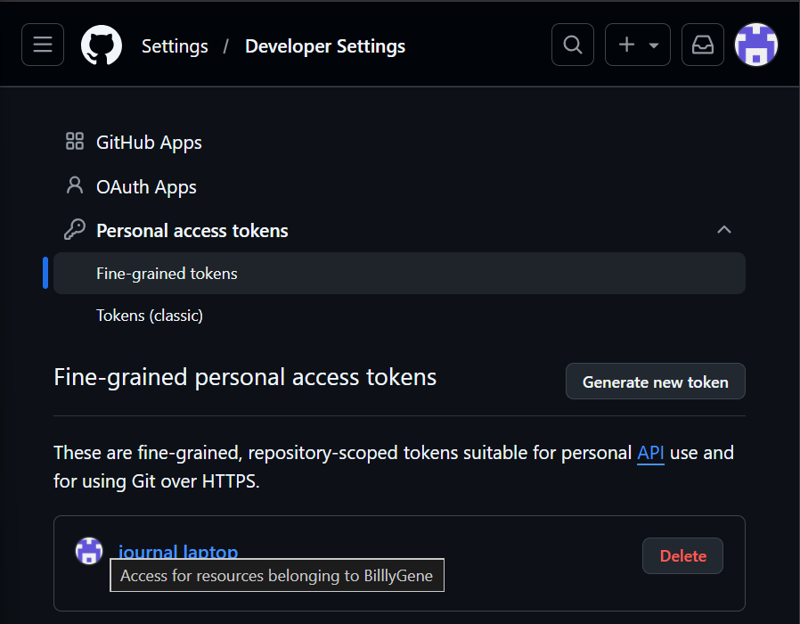
The token list after creating it: only the name shows, never the code.
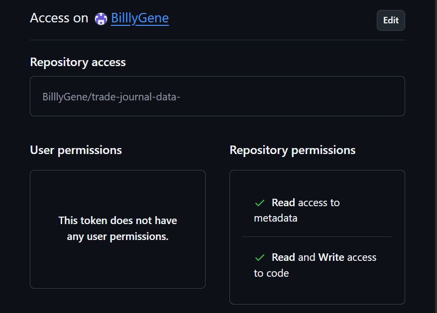
Click the token's name to check its access. Here the repository has the unwanted dash at the end.
Lost the code? Open the token list (github.com/settings/personal-access-tokens) → click the token's name → Regenerate token → set the expiration → Regenerate token → copy the new code with the copy icon. Regenerating cancels the old code, so paste the new one into the app.
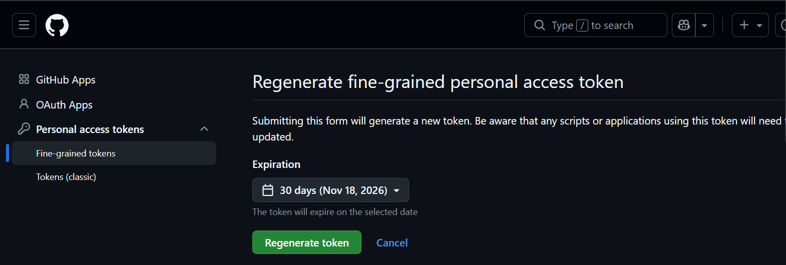
The Regenerate page. Change "30 days" to a longer expiry before clicking the green button.
6.3 Connect the app on this device
Open the journal app. Check the version is v1.4 or newer (part 4.3).
Tap the Sync off chip at the top right. It opens Settings → Sync between devices.
GitHub username: the friend's username, exactly. Private repository name:trade-journal-data.
Click in Access token and paste (Ctrl+V on a laptop; long-press → Paste on a phone). Underneath it should say "93 characters ✓ looks complete" (or close to 93). Tap Show to see what you pasted.
Tap Connect and sync.
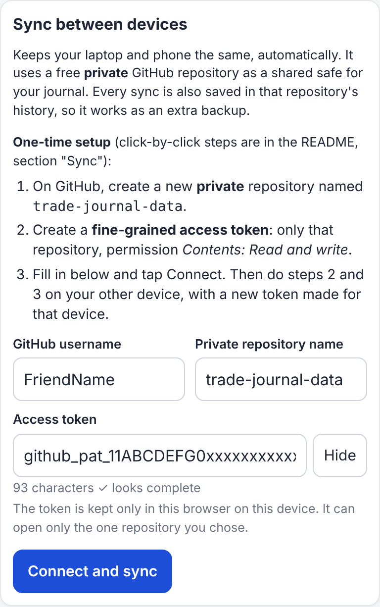
Filled in correctly: the length check says "looks complete".
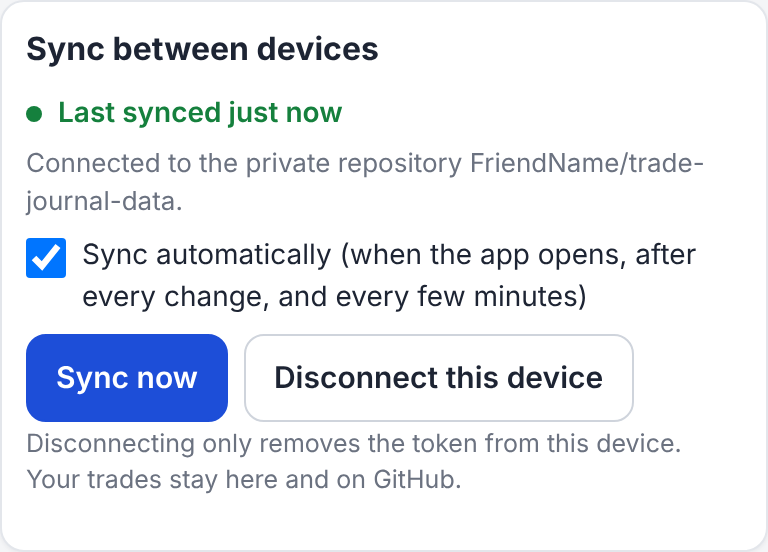
Connected. Green "Last synced just now".
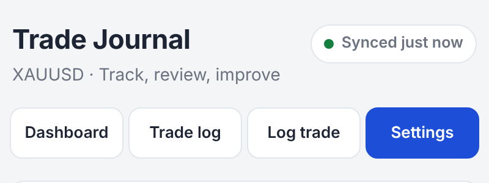
The chip at the top right turns green on every tab.
6.4 The other device
On the phone, repeat 6.2 (new token, named journal phone) and 6.3. Within seconds the laptop's trades appear on the phone. If both devices already had trades, the first sync joins them together and deletes nothing.
Why a separate token per deviceIf the phone is lost, you delete only the phone's token on GitHub and the laptop keeps working. You also never have to send a token over WhatsApp or email, where it could leak.
6.5 Test it (2 minutes)
On the laptop, log a test trade.
On the phone, open the app (or tap the chip → Sync now). The test trade appears.
On the phone, delete it (Trade log → Delete). On the laptop, tap Sync now. It's gone.
How sync behaves from now on
It runs when the app opens, a few seconds after every change, every 5 minutes, and when the internet comes back.
With no internet you can keep logging. The chip says Offline and it catches up later.
If the same trade is edited on both devices before a sync, the later edit wins. The other version is saved in the repository's conflicts folder, so nothing is lost.
Every sync is saved in the repository's history, so it also acts as a backup.
7. Problems and fixes
Everything below actually happened, or is the app's own warning message. Match what you see and do what's in the right-hand column.
What you see
What it means
Fix
Sync off chip, and the other device doesn't show the trades
Sync isn't connected on this device yet.
Part 6.2 and 6.3 on this device.
Yellow box: "Your trades are only saved on this device, and sync is off…"
Same as above. Without sync or a backup, losing the browser data loses the trades.
Click Set up sync, or Back up now.
Couldn't find the github_pat_ code
GitHub shows it only once, right after creating it.
Token list → token name → Regenerate token → copy with the copy icon.
"This token is only NN characters long…"
Only part of the code was copied.
Copy again with the copy icon. A full code is about 93 characters.
"This does not look like a GitHub token"
Something else was pasted (e.g. the token's name).
Paste the github_pat_… code.
"GitHub did not accept the access token…"
The code is old (regenerated since), expired, or incomplete.
Regenerate, then paste the new code.
"Repository "…/trade-journal-data-" not found…"
The name differs from GitHub's: a dash at the end, a typo, or the token wasn't given this repository.
Rename the repository (part 6.1), or fix the spelling. Check the token's Repository access.
Regenerate the token, then paste it again in Settings → Sync.
Offline chip
No internet. Not an error.
Nothing. It syncs by itself later.
Website shows 404
Pages isn't on yet, still building, or the files are in a sub-folder.
Wait 2 minutes. Check part 3.3 and the "top level" warning in 3.2.
A new feature doesn't show up
The old copy is still cached.
Refresh once or twice. Check the version in Settings → About.
Phone lost or replaced
The trades are safe in the private repository.
On GitHub, delete the old phone's token. On the new phone, install the app and do part 6.2 and 6.3: everything downloads again.
⚠ Two buttons that behave differently when sync is onDelete all trades and screenshots (Settings → Danger zone) only clears this device. Everything comes back from GitHub on the next sync. To remove a trade everywhere, delete it from the Trade log. Import → Replace all also only replaces this device. Trades in GitHub that aren't in the backup come back on the next sync.
8. Changing or updating the app later
8.1 Getting updates
Route A (shared link): nothing to do. Updates to the original reach everyone after a refresh.
Route B with a fork: open the friend's trade-journal repository → Sync fork → Update branch. Pages republishes in 1 to 2 minutes.
Route B with uploaded files: in the repository, Add file → Upload files → drag the new file(s) with the same names → Commit changes. Files with the same name are replaced.
8.2 Editing the app yourself
Click a file on GitHub → the pencil icon → edit → Commit changes. After any change to the app, also bump the version in two places, so phones stop using their offline copy:
sw.js, line 3: const CACHE = 'trade-journal-v1.4'; → change to v1.5.
index.html: search (Ctrl+F) for APP_VERSION and change '1.4' to '1.5'. This is the number shown in Settings → About.
Why bump the versionThe phone keeps a copy of the app so it works offline. A new version name tells it to throw the old copy away. Without it, a phone can keep showing the old app.
8.3 Your data is never in the app files
Editing, replacing or even deleting the trade-journal app repository never touches trades. They live in each browser and in trade-journal-data. Still export a full backup (.json) from Settings → Data now and then: it costs nothing and doesn't depend on GitHub.
9. The files: what each one does
All files sit at the top level of the trade-journal repository (no folders needed).
File
What it does
Needed?
index.html
The whole app: screens, styling, calculations, storage and sync, in one file. Opening it straight from the computer (double-click) also works, but that copy has its own separate notebook.
Yes
sw.js
The "service worker": lets the app open with no internet, and fetches new versions.
Yes (for offline)
manifest.json
Name, colour and icon used when installing on a phone home screen.
Yes (for install)
icon.svg, icon-192.png, icon-512.png
The app icon in different sizes.
Yes
README.md
Short instructions shown on the repository's GitHub page.
Optional
SPEC.md, tests/, guide/
Only in the original repository: the full specification, automatic tests, and this guide. Not needed to run the app.
No
What the private cabinet holds (created by the app)
In trade-journal-data
What it is
journal.json
All trades and settings.
shots/
The screenshots, one file each.
conflicts/
Only if a trade was edited on two devices at once: the version that lost.
README.md
A note saying "keep this private".
⚠ Don't edit the cabinet's files by handChange trades in the app. Editing journal.json on GitHub could break sync.
10. Final checklist
GitHub account created; username written down exactly.
App: forked or uploaded; the repository's main page lists index.html directly. (Route A: skip.)
Pages turned on: main / (root); the site opens at USERNAME.github.io/trade-journal/.
Installed on the phone's home screen.
Settings → About shows v1.4 or newer.
Main instrument, checklist and limits set.
Private repository trade-journal-data created; the name ends in data, not data-.
Laptop token: only trade-journal-data, Contents: Read and write, about a year's expiry; copied with the copy icon.
Laptop connected: green chip.
Phone token made (separate); phone connected: green chip.
Test trade appears on the other device, and deleting it removes it on both.
A calendar reminder set for 11 months ahead: "renew the journal tokens".
DoneFrom here on, just log trades. Both devices stay in step by themselves, and the private repository keeps a full history as a backup.